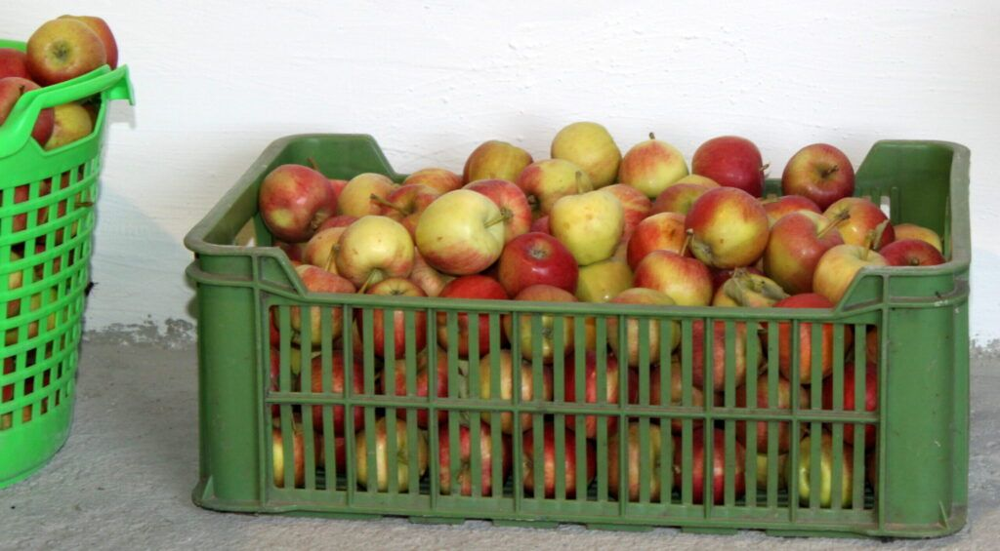
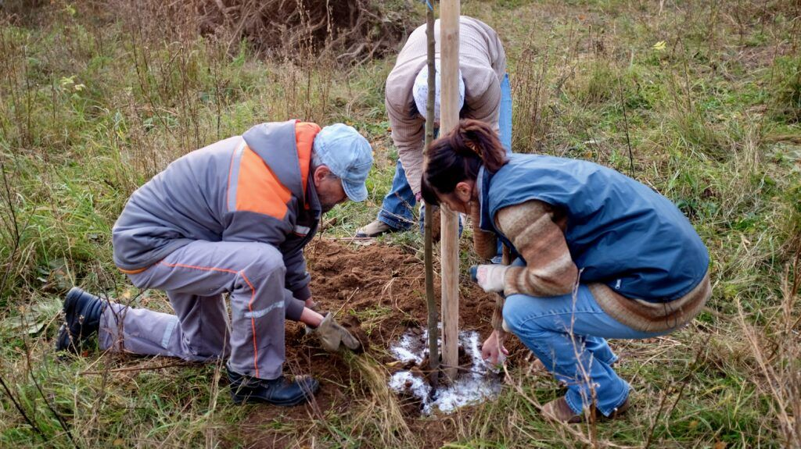
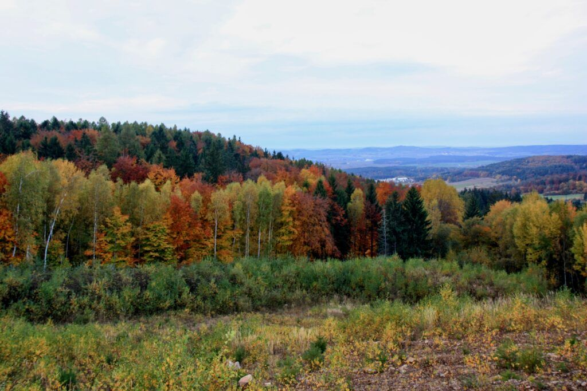
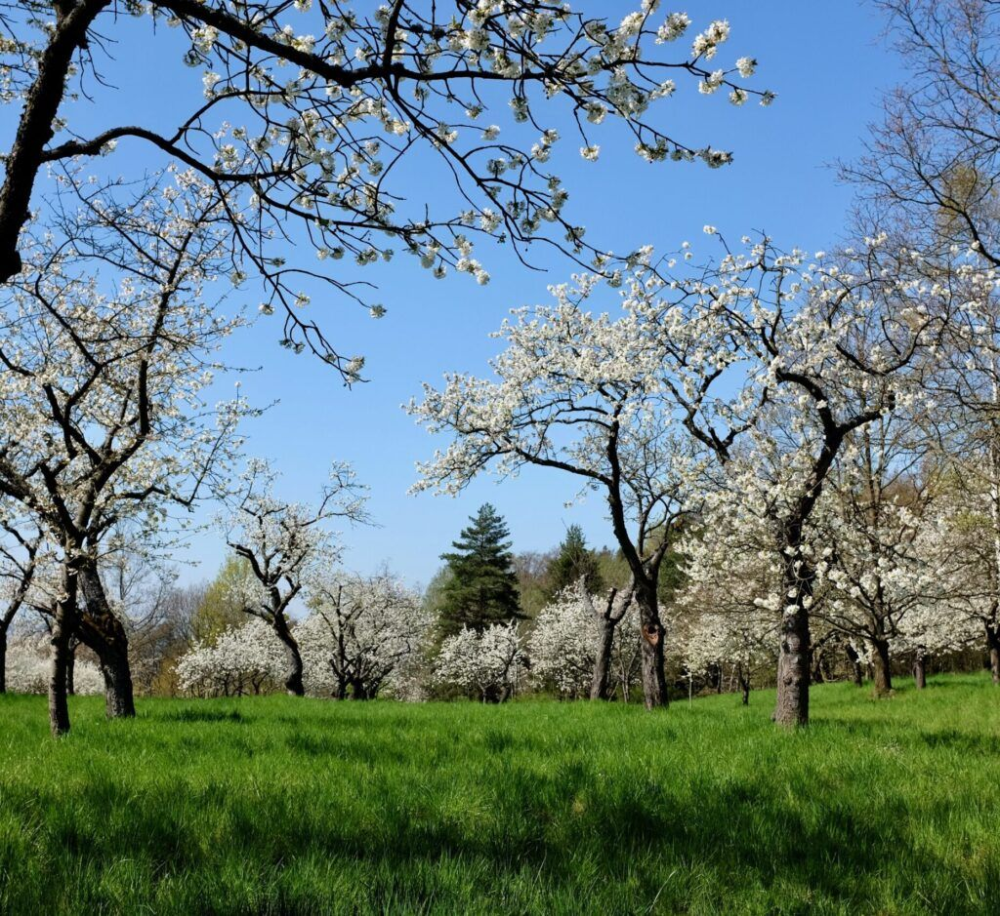
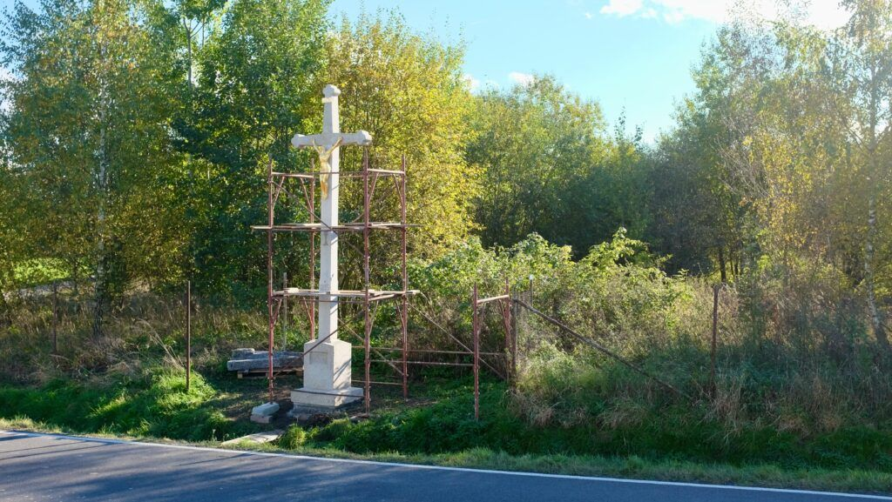

Moštárna
Každý podzim svépomocí provozujeme moštárnu. Přivezte vlastní ovoce a odvezete si čerstvý mošt.
Termíny, ceny a rezervace →Aby místo, kde žijeme, bylo krásnější. Dolní Novosedly u Písku.
Moštárna: termíny a rezervace najdete na stránce moštárny.
Rezervovat termínChtěli jsme, aby místo, kde žijeme, bylo krásnější. Podporujeme sousedské vztahy, staráme se o život v obci, pečujeme o přírodu a památky.
Jsme parta sousedů a přátel, kteří mají slabost pro krajinu, staré sady a vesnický život. Většinu práce děláme svépomocí, ve volném čase a s chutí.


Každý podzim svépomocí provozujeme moštárnu. Přivezte vlastní ovoce a odvezete si čerstvý mošt.
Termíny, ceny a rezervace →
Podílíme se na organizaci setkání místních obyvatel u příležitosti tradičních svátků.

Tak jako naši předci jsme na obecním pozemku v krajině založili ovocný sad a dál se o něj staráme.

Pomohli jsme s obnovou pamětních křížů v naší obci, aby tu zůstaly i pro další generace.
Ve spolku rádi přivítáme nové členy i dobrovolníky na jednotlivé akce.
Dolní Novosedly 6
397 01
Lukáš Zagata
2600722137 / 2010